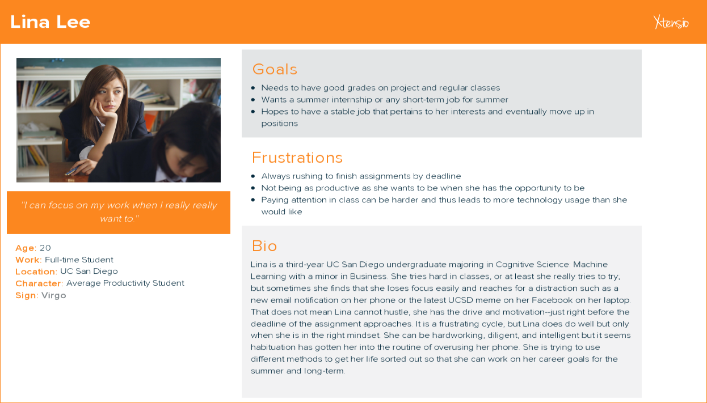

FOCUS MODE:
PHONE FEATURE
UX DESIGN, UX RESEARCH
TOOLS
Adobe Illustrator + Photoshop
MY ROLE
UX Designer with wireframing and prototyping
TEAM
Angela, Cole, Christal, Kimberly, Max
TIME
3 months
PROBLEM
Our phones have taken over our productivity. Whether it be for social media or work emails, technology has taken over many people’s time, drawing attention away from previous focuses.
SOLUTION
A phone OS feature, Focus Mode, to help redirect attention back to the original responsibilities.
BACKGROUND
Over three months, my group and I had an opportunity to work on any problem that could be solved based on supportive evidence. My team and I wanted to focus on a sustainability problem, originally looking into product waste. Given some thought and time, we eventually decided to venture out into a more abstract concept: time waste. We then went through the process of needfinding and conducting user research.
RESEARCH AND DATA
My team interviewed students and professors on their day-to-day activities, created an online survey gathering student insights, and conducted field observations auditing classes of varying sizes. Our goal was to find out what affected their productivity levels throughout the day.
We then consolidated all of our data points into an affinity diagram to better organize the information. It turns out that there are countless factors that affect attention span and productivity levels. We focused on technology-related data because we felt that everybody was affected either directly or indirectly by phone usage. Our main takeaways were:
Over 50% spend time on social media out of boredom and habit.
People often don’t realize when they are distracted on their phones.
People are less likely to go back to their previous activities if they have been on their phones for over 15 mins.

THE PROBLEM
Based on our research, we found many students were often on their phones in class. Though professors do notice phone distractions (despite the class size), they do not take any action to discourage usage as it would take away lecture time. Thus, there is a prevailing issue of irrelevant phone use in class lectures that is not properly addressed. What can we do to solve it?
POTENTIAL SOLUTIONS
Professor Student Charter Have professors and students discuss full expectations of each other and create an agreement to better understand and help fulfill each other’s goals
Social Media Buy-in Request social media sites to remind users to take occasional breaks if users have been on them for a long period of time
Phone Focus Mode Alert System Have a notification alert system to remind users to get off their phones when Focus Mode is turned on
Ultimately, we chose option 3 because we realized it would address our problem while still complying with the limitations of our time and resource constraints.
PERSONAS
We created a few personas who would be affected by our problem based on the people we interviewed and focused on the everyday college student to better understand the underlying goals and motivations behind their actions.
{kind=link}
PROTOTYPING AND USER TESTING
We made rapid prototypes to get a feel for what worked and what did not, and decided on a design for user testing.
Round 1
To gain instant feedback, we used sticky notes--one with an authoritative message and one with a collaborative message--to notify people when they got off track and switched their attention to their phones.

Present users with screens whenever they got distracted on their phones for too long.
- People would lose focus after a while and needed to be reminded frequently.
- People had different tolerances for frequencies of messages.
Round 2
User can now play around with the interface and customize notification frequency with our paper prototypes.
{kind=link}
{kind=link}
{kind=link}
Same as before but adding validation interviews to get more feedback on the user interface
- People liked customization and having more control to better suit their needs.
- Some people expressed interest in seeing a noticeable status change when the alert mode was on.
- Interestingly enough, sometimes people would be hyper aware and be extra diligent in not getting distracted after being alerted once.
REDESIGN
I helped make a high fidelity mockup to address some concerns and suggestions our users had.
How We Addressed
We added the option to halt all messages when they became too much.
Allowed an icon to show in status bar to inform users that the mode was effective
{kind=link}
LOOKING BACK
Our users gave positive feedback, showing interest in the design and citing how useful the feature would be for their productivity. Though we gained a lot of good input, there were some limitations that affected our designs. Because of constraints, we were only able to test people within the UC San Diego campus who fall under the WEIRD category of demographics. We also did not test over a long period of time so we do not know about long-term effectiveness.
If we were to revisit this project, we would like to test people of different demographics in a longitudinal study to see how our design has any positive effects on people over time.
UPDATES
Around a year after this project, Apple introduced a new feature on as part of their iOS12: Screentime. The goal of Screen Time was to allow users the freedom to customize their phone usage to better suit their productivity needs. Though there are similarities between Focus Mode and Screen Time, the latter has a different set of functionalities to help improve productivity which include:
-
Down Time: sets a period of time where only certain apps and phone functionalities are allowed
-
App Limits: allows the user to set constraints on when they can use certain apps
-
Always Allowed: allows apps even if during specified Down Time period
-
Content/ Privacy Restrictions: allows user to block certain content
Thanks for reading. üí°
INDEX

SASE REDESIGN
Web Design

SOUVENEAR KIOSK
Visual Design

VOTE! APP
UX Design

FUN WORK
Graphic Design